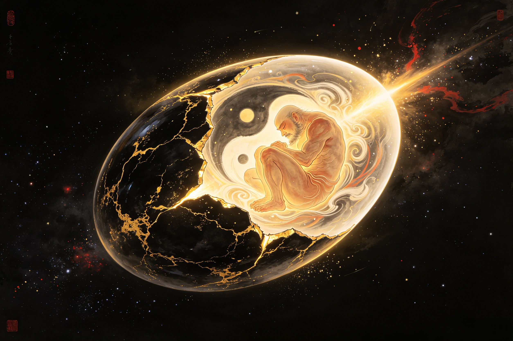

Before the Beginning
18,000 years inside a cosmic egg. The first consciousness emerging from infinite darkness — how the oldest Chinese myth imagines the moment before everything.
Before there was anything — before heaven, before earth, before a single star had ever ignited — there was Hundun (混沌). This primordial chaos was not empty. The word "chaos" in modern English suggests disorder, but Hundun is better understood as infinite potential without form: a state in which all possible things coexist, undifferentiated, swirling together in a darkness so complete that darkness itself had not yet been defined. It is the silence before the first sound, the stillness before the first movement. The ancient Taoist texts speak of this state with reverence. The Daodejing calls it "the beginning of heaven and earth, the mother of all things" — something that existed before the Dao could even be named. The Zhuangzi tells a parable of Emperor Hundun, a being without sensory organs, who was gifted the seven openings of perception by well-meaning friends — and died as a result. The message is profound: Hundun is not a deficiency to be corrected but a wholeness that precedes division. In this state, there was no sun, no moon, no stars. No Nüwa shaping clay, no Jade Emperor ruling from a celestial throne, no Taishang Laojun refining elixirs in his furnace. There was only the egg — the cosmic egg, containing all matter compressed into a single undifferentiated mass, and at its center, curled in the darkness, the sleeping seed of the first being. Chinese cosmology names this primordial state wuji (无极) — the ultimate nothingness, the poleless void from which taiji (太极) would emerge: the supreme ultimate, the first principle of differentiation. Pangu did not create something from nothing. He differentiated what was already there, hidden in the egg, waiting for a consciousness to recognize it.
The cosmic egg floated in the void — a perfect sphere of obsidian darkness, its surface like polished black stone shot through with veins of golden light. These veins pulsed. They had a rhythm, because inside the egg there was already a heartbeat — the first pulse in the history of existence, slow as the movement of continents, deep as the ocean floor. Inside the egg, Pangu gestated. He was not yet conscious. His eyes were closed. His body was curled in the fetal position, his massive limbs folded against his chest, his head tucked toward his knees. Around him swirled the yin and yang energies of the undifferentiated universe — light and dark, hot and cold, wet and dry, all mixed together in a cosmic soup of pure potential. The number 18,000 is not arbitrary in Chinese cosmology. It is a number of cosmic completion — 18 being the product of 3 (heaven) times 6 (earth). Throughout Chinese literature, vast numbers carry symbolic weight: the 108,000 li of the Journey to the West, the 36,000 days of Pangu's total labor. The 18,000 years of gestation represent not a specific historical duration but a complete cosmic age — the exact amount of time required for the first being to grow from potential to actuality. During these millennia, Pangu's hair grew long and tangled, spreading through the egg's interior like the first tendrils of a cosmic root system. His heartbeat became the first rhythm — the template for all cycles, all seasons, all patterns of growth and decay that would one day govern the world. His breath stirred the surrounding chaos in currents and eddies, creating the first movements in an otherwise static universe. The shell of the egg did not merely contain him — it nourished him. The swirling energies fed his growth. The pressure of containment formed his muscles. The darkness taught him patience. When he finally opened his eyes, 18,000 years after the beginning of his sleep, he was ready. Some scholars draw a parallel between Pangu's gestation and Sun Wukong's birth from a stone egg on Flower-Fruit Mountain — both emerging from mineral wombs after cosmic ages of incubation. Xiwangmu's Peach Garden also echoes this theme: fruits that require 9,000 years to ripen, gestating their miraculous properties across multiple cosmic cycles.
After 18,000 years of gestation, something stirred. The first consciousness in the history of the universe began to wake up. There was no alarm, no external force. The egg had not been disturbed. No voice called his name. Pangu simply reached the end of his sleep and began the long ascent into awareness. His eyelids trembled — the first voluntary movement in cosmic history. They opened. And light existed. Not the light of the sun (that would come later, from his left eye), but the light of awareness itself — the glow of a conscious mind encountering the fact of its own existence for the first time. What did Pangu see when those first eyes opened? Darkness. But not the darkness of the void — the darkness of the egg's interior, thick and dense and swirling with indistinct shapes. He saw a world in which nothing was separate from anything else. Light was tangled with darkness. Heat was knotted with cold. The pure and the polluted, the high and the low, all pressed together in a suffocating embrace. Pangu's first perception was not wonder. It was the awareness that something was wrong. Some versions of the myth say he cried out — the first sound, a roar of confusion and pain that would later become the template for thunder. Some say he simply looked around, taking in the chaos, and understood immediately that he was not meant to stay inside. Why did he wake when he did? The texts are not consistent. Some say the egg had grown too small for his now-massive body — after 18,000 years of growth, he could no longer remain curled, and his limbs pressing against the shell demanded release. Others suggest that the Dao itself — the great cosmic pattern that would one day govern all things — reached a point of critical mass where differentiation became inevitable. In this interpretation, Pangu did not choose to wake; the universe chose to be born through him. The parallel with the Buddha's enlightenment is striking: both figures sit in perfect stillness for an enormous span of time, then open their eyes to see reality as it truly is. Where the Buddha saw suffering and its cessation, Pangu saw chaos and the need for order. And just as the Buddha's awakening changed the spiritual landscape of the world, Pangu's awakening changed its physical landscape — immediately, violently, irrevocably. Erlang Shen, too, is associated with a truth-seeing eye — his third eye that pierces deception. But Pangu's eyes were the first of all, and what they saw was not deception but the undifferentiated truth of a universe not yet born.
Pangu stretched out his hand and found his axe. Where did it come from? Some texts say it was always there beside him in the egg — a divine tool formed from the same cosmic energies that had formed him, forged in the pressure of 18,000 years of gestation. Some say he willed it into being — the first act of creation was not the swing but the thought that preceded it: "I need a tool." The axe was not a weapon. It had never drawn blood. It was a tool of division — the first technology, the first instrument of conscious will upon raw matter. Pangu gripped its handle, and the wood (or stone, or bone — accounts vary) met his palm as if it had always belonged there. He raised it above his head. The muscles of his back — mountains before mountains existed — coiled with the accumulated tension of 18,000 years of stillness. He swung. The blade struck the darkness of the egg's interior, and the universe screamed into existence. The crack of the cosmic egg is the first sound — the origin of thunder, the primordial frequency from which all other sounds would descend. A flood of light poured through the fracture. Yang — the light, clear, ascending principle — rose upward, expanding with explosive speed, becoming the sky. Yin — the heavy, turbid, sinking principle — descended, condensing, becoming the earth. Between them stood Pangu, the first being in the newly-bisected cosmos, one hand pressing against the rising heavens, one foot stamping the thickening earth. The fragments of the egg's shell — obsidian shards laced with gold veins — scattered across the newborn universe, becoming the first stars and galaxies. They still drift, in the poetry of the myth, carrying traces of the egg that held all things. Pangu drew his first breath of the new air — air that had never existed before, air that was the difference between heaven and earth, air that tasted of freedom and infinite possibility. He looked up at the sky he had created. He looked down at the earth beneath his feet. And he began the second and longer phase of his labor: holding them apart. This is the origin of origins — the ur-moment from which all Chinese mythology flows. Every story that follows — the Bull Demon King's mountain-shaking rages, Nezha's miraculous emergence from a lotus, the Jade Emperor's celestial bureaucracy — rests on the foundation of Pangu's single swing. Nothing in Chinese myth exists before this moment, and everything that comes after carries its echo.
Hundun is the primordial chaos that existed before creation — but it is not "chaos" in the Western sense of disorder or confusion. In Chinese thought, Hundun represents infinite potential without form, a state of undifferentiated wholeness in which all possible things coexist but nothing is yet distinguished. The Zhuangzi tells a famous parable: Emperor Hundun, a being without the seven sensory openings (eyes, ears, nose, mouth), was visited by the gods of the North and South Seas. Grateful for their kindness, the two gods decided to give Hundun the seven openings — drilling one each day. On the seventh day, Hundun died. The story teaches that Hundun is not a deficiency to be fixed but a wholeness that precedes differentiation. In the Pangu creation myth, the cosmic egg is Hundun — the vessel of infinite potential that must be broken open for the world to emerge. Modern translations sometimes render Hundun as "chaos" or "primordial soup," but the deeper meaning is closer to "the fullness of what has not yet become."
Pangu slept inside the cosmic egg for 18,000 years — a number of profound cosmological significance in Chinese culture. The number 18 (3 x 6) represents the multiplication of heaven (3) and earth (6), symbolizing cosmic completeness. In Chinese numerology, 18,000 represents a full world-cycle, the exact span needed for a universe to gestate. This pattern of vast, symbolic numbers recurs throughout Chinese mythology: the Journey to the West spans 108,000 li (resembling the 108 defilements of Buddhism), Pangu pushes heaven and earth for another 18,000 years after awakening (36,000 years total), and the Peaches of Immortality in Xiwangmu's garden require 3,000, 6,000, or 9,000 years to ripen depending on their tier. These numbers are not meant to be taken as literal historical durations. They are numerological symbols that convey the cosmic scale and sacred completeness of the events they describe. Pangu's 18,000-year sleep tells us that the origin of the universe did not happen quickly or easily — it required the patience of a cosmic age.
Pangu's origin story is the foundational myth of Chinese civilization — the story every Chinese schoolchild learns, the template that shapes Chinese views of the cosmos, the body, and the relationship between humanity and nature. Several key cultural concepts originate with Pangu: First, the idea of the cosmos as a living body. Because Pangu's body became the world, Chinese thought has always seen the universe as organic and alive, not mechanical — a view that underlies Taoist philosophy, Traditional Chinese Medicine (where the human body mirrors the landscape), and feng shui (where the landscape has "dragon veins" like a living creature). Second, the concept of sacrificial creation. Pangu did not create the world from a position of power and leisure — he worked until he died, giving his entire being so that the world could exist. This theme of sacrifice as the foundation of life echoes through Chinese ancestor veneration and Confucian ethics. Third, the non-dualistic relationship between creator and creation. Unlike Western myths where a transcendent God creates the world from outside, Pangu is the world. There is no separation between divine and natural, between spirit and matter. This has profoundly shaped Chinese attitudes toward nature, authority, and the meaning of existence.
Dive Deeper